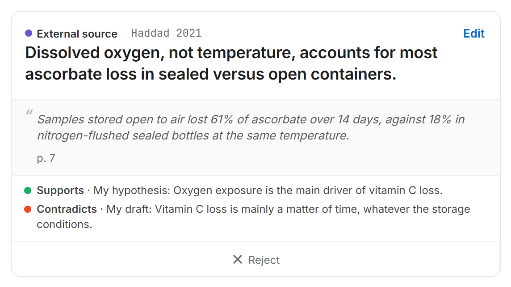
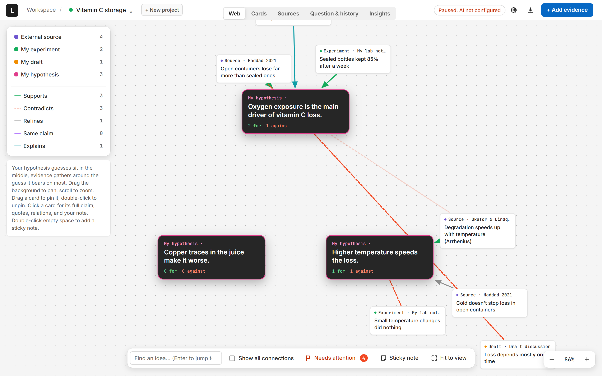
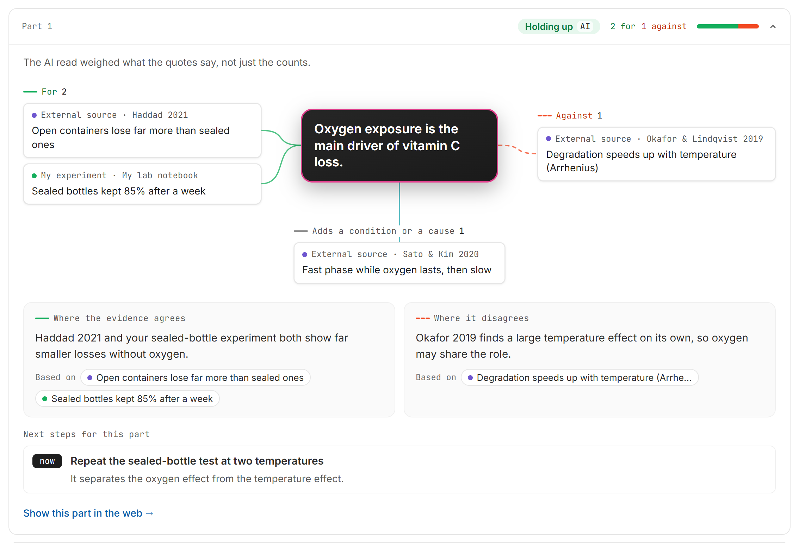

Every claim, word for word
Each card states one of a source's main conclusions and keeps the exact passages it rests on. Lattice checks every quote against the source text, so nothing is paraphrased into existence.

A local-first research workspace. Lattice turns the papers you read and your own experiments into evidence cards anchored to exact quotes, then maps how every idea supports, contradicts, refines, or explains your hypothesis.
No account. Your projects stay in your browser.

Each card states one of a source's main conclusions and keeps the exact passages it rests on. Lattice checks every quote against the source text, so nothing is paraphrased into existence.

Your hypothesis is split into separate guesses that sit at the centre. Evidence gathers around the guess it bears on, and the AI draws the links for you: no button to press.

Lattice lists the contradictions between your sources, and the guesses nothing has tested yet.
Set a research question and a working hypothesis. Record a new version whenever your thinking changes, and see each change in a timeline.
Paste a link, arXiv paper, or DOI; upload a PDF; paste text; or capture a passage with the Chrome extension. Mark each piece as an external source or your experiment.
Follow what supports and contradicts each guess, add notes and sticky notes, and run an optional AI stress-test of your evidence.
Projects, sources, and their full text are stored in your browser, with no Lattice account or cloud database. When you connect an OpenAI key, the text you add is sent to OpenAI to extract cards and find how ideas relate; you agree to this when you create a project, and the stress-test asks separately.
Back up, export, import, or delete your work at any time from Privacy & data.
The local beta is for people reading, experimenting, and writing toward an answer they want to defend.
Evidence cards with verified quotes, the idea web, hypothesis history, Chrome capture, and Markdown and project export.
Open the betaRuns on your computer withnpm start; AI features need your own OpenAI API key.